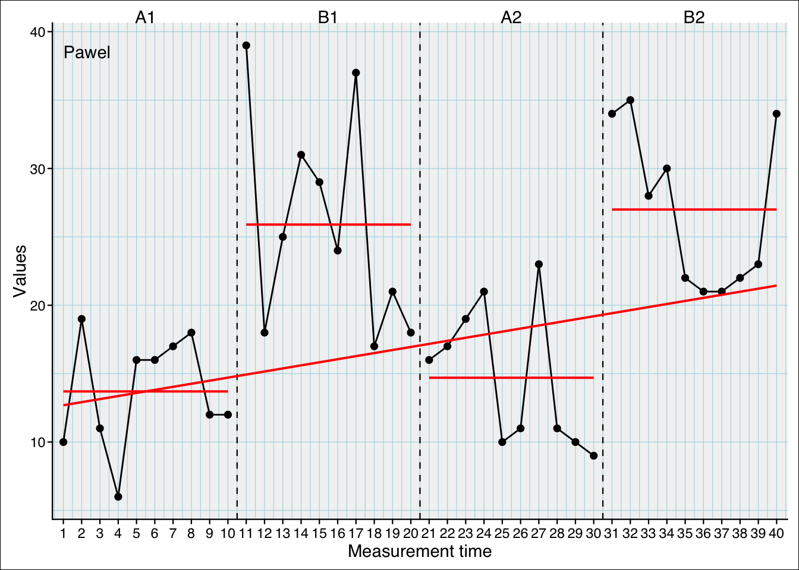

Contrasts in single-cases
contrasts
regression
statistics
Abstract
Contrasts in regression modells
Example dataset
| values | mt | phase |
|---|---|---|
| 10 | 1 | A1 |
| 19 | 2 | A1 |
| 11 | 3 | A1 |
| 6 | 4 | A1 |
| 16 | 5 | A1 |
| 16 | 6 | A1 |
| 17 | 7 | A1 |
| 18 | 8 | A1 |
| 12 | 9 | A1 |
| 12 | 10 | A1 |
| 39 | 11 | B1 |
| 18 | 12 | B1 |
| 25 | 13 | B1 |
| 31 | 14 | B1 |
| 29 | 15 | B1 |
| 24 | 16 | B1 |
| 37 | 17 | B1 |
| 17 | 18 | B1 |
| 21 | 19 | B1 |
| 18 | 20 | B1 |
| 16 | 21 | A2 |
| 17 | 22 | A2 |
| 19 | 23 | A2 |
| 21 | 24 | A2 |
| 10 | 25 | A2 |
| 11 | 26 | A2 |
| 23 | 27 | A2 |
| 11 | 28 | A2 |
| 10 | 29 | A2 |
| 9 | 30 | A2 |
| 34 | 31 | B2 |
| 35 | 32 | B2 |
| 28 | 33 | B2 |
| 30 | 34 | B2 |
| 22 | 35 | B2 |
| 21 | 36 | B2 |
| 21 | 37 | B2 |
| 22 | 38 | B2 |
| 23 | 39 | B2 |
| 34 | 40 | B2 |
# mean of all phases
(means <- tapply(df$values, df$phase, mean))
A1 B1 A2 B2
13.7 25.9 14.7 27.0
(grand_mean <- mean(means))
[1] 20.325# Plm function reference:
plm(exampleA1B1A2B2$Pawel, contrast = "first", trend = FALSE, slope = FALSE) %>% coef() %>% .[,1](Intercept) phaseB1 phaseA2 phaseB2
13.7 12.2 1.0 13.3 plm(exampleA1B1A2B2$Pawel, contrast = "preceding", trend = FALSE, slope = FALSE) %>% coef() %>% .[,1](Intercept) phaseB1 phaseA2 phaseB2
13.7 12.2 -11.2 12.3 Contrasts
Treatment contrast
Compare mean of second to last phase against first phase (intercept)
The Intercept is the mean of a reference phase (defaults to the first).
The predictors are the differences from a phase to the reference (intercept).
treatment <- contr.treatment(4)
colnames(treatment) <- c("B1vsA1","A2vsA1","B2vsA1")
treatment B1vsA1 A2vsA1 B2vsA1
1 0 0 0
2 1 0 0
3 0 1 0
4 0 0 1lm(values~phase, data=df, contrasts = list(phase = treatment)) |> coef()(Intercept) phaseB1vsA1 phaseA2vsA1 phaseB2vsA1
13.7 12.2 1.0 13.3 c(Intercept = 13.7, # phaseA1
phaseB1vsA1 = 25.9 - 13.7,
phaseA2vsA1 = 14.7 - 13.7,
phaseB2vsA1 = 27 - 13.7) Intercept phaseB1vsA1 phaseA2vsA1 phaseB2vsA1
13.7 12.2 1.0 13.3 Sum contrast
Comparison from the first to the second last phase with the overall mean (Intercept is overall mean)
The Intercept is the overall mean.
The predictors are the differences from a phase mean to the overall mean.
sum <- contr.sum(4)
colnames(sum) <- c("A1vsMean","B1vsMean","A2vsMean")
sum A1vsMean B1vsMean A2vsMean
1 1 0 0
2 0 1 0
3 0 0 1
4 -1 -1 -1lm(values~phase, data=df, contrasts = list(phase = sum)) |> coef() (Intercept) phaseA1vsMean phaseB1vsMean phaseA2vsMean
20.325 -6.625 5.575 -5.625 c(Intercept = grand_mean,
phaseA1vsMean = 13.7 - grand_mean,
phaseB1vsMean = 25.9 - grand_mean,
phaseA2vsMean = 14.7 - grand_mean) Intercept phaseA1vsMean phaseB1vsMean phaseA2vsMean
20.325 -6.625 5.575 -5.625 Helmert contrast
Compares from the second to the last phase with the mean of all preceding phases.
The Intercept is the overall mean.
The predictors are the mean differences from a phase mean to the mean of all preceding phases.
helmert <- contr.helmert(4)
colnames(helmert) <- c("B1vsA1", "A2vsA1_B1", "B2vsA1_B1_A2")
helmert B1vsA1 A2vsA1_B1 B2vsA1_B1_A2
1 -1 -1 -1
2 1 -1 -1
3 0 2 -1
4 0 0 3lm(values~phase, data=df, contrasts = list(phase = helmert)) |> coef() (Intercept) phaseB1vsA1 phaseA2vsA1_B1 phaseB2vsA1_B1_A2
20.325 6.100 -1.700 2.225 c(Intercept = grand_mean,
phaseB1vsA1 = (25.9 + -13.7) / 2,
phaseA2vsA1_B1 = (14.7 + (-13.7-25.9)/2) / 3,
phaseB2vsA1_B1_A2 = (27 + (-13.7-25.9-14.7)/3) /4) Intercept phaseB1vsA1 phaseA2vsA1_B1 phaseB2vsA1_B1_A2
20.325 6.100 -1.700 2.225 Revert Helmert
Comparing the second to last phase against the mean of all preceding phases
The Intercept is the grand mean.
The predictors are the differences from a phase to the mean of the preeding phases.
Compare phase2 vs. phase 1, phase 3 vs. mean of phase 1 and 2, phase4 vs. mean of phases 1,2,3 (Intercept is overall mean)
revers_helmert <- matrix(c(-1/2, 1/2, 0, 0, -1/3, -1/3, 2/3, 0, -1/4, -1/4, -1/4, 3/4), ncol = 3)
colnames(revers_helmert) <- c("B1vsA1", "A2vsA1_B1", "B2vsA1_B1_A2")
revers_helmert B1vsA1 A2vsA1_B1 B2vsA1_B1_A2
[1,] -0.5 -0.3333333 -0.25
[2,] 0.5 -0.3333333 -0.25
[3,] 0.0 0.6666667 -0.25
[4,] 0.0 0.0000000 0.75lm(values~phase, data=df, contrasts = list(phase = revers_helmert)) |> coef() (Intercept) phaseB1vsA1 phaseA2vsA1_B1 phaseB2vsA1_B1_A2
20.325 12.200 -5.100 8.900 c(Intercept = grand_mean,
phaseB1vsA1 = 25.7 - 13.7,
phaseA2vsA1_B1 = 14.7 - (13.7+25.9)/2,
phaseB2vsA1_B1_A2 = 27 - (13.7+25.9+14.7)/3) Intercept phaseB1vsA1 phaseA2vsA1_B1 phaseB2vsA1_B1_A2
20.325 12.000 -5.100 8.900 Cummulative
Compare mean of second to last phase to mean of preceding phase
The Intercept is the mean of the first phase.
The predictors are the differences from a phase to the preeding phase.
cumulative <- matrix(c(0,1,1,1, 0,0,1,1, 0,0,0,1), ncol = 3)
colnames(cumulative) <- c("B1vsA1","A2vsB1","B2vsA2")
cumulative B1vsA1 A2vsB1 B2vsA2
[1,] 0 0 0
[2,] 1 0 0
[3,] 1 1 0
[4,] 1 1 1lm(values~phase, data=df, contrasts = list(phase = cumulative)) |> coef()(Intercept) phaseB1vsA1 phaseA2vsB1 phaseB2vsA2
13.7 12.2 -11.2 12.3 c(Intercept = 13.7,
phaseB1vsA1 = 25.9 - 13.7,
phaseA2vsB1 = 14.7 - 25.9,
phaseB2vsA2 = 27 - 14.7) Intercept phaseB1vsA1 phaseA2vsB1 phaseB2vsA2
13.7 12.2 -11.2 12.3 Contrast computation
treatment
(treatment <- contr.treatment(4))
2 3 4
1 0 0 0
2 1 0 0
3 0 1 0
4 0 0 1
(treatment <- cbind(1, treatment))
2 3 4
1 1 0 0 0
2 1 1 0 0
3 1 0 1 0
4 1 0 0 1
(treatment <- solve(t(treatment)))
2 3 4
1 1 -1 -1 -1
2 0 1 0 0
3 0 0 1 0
4 0 0 0 1
(treatment <- treatment[,-1])
2 3 4
1 -1 -1 -1
2 1 0 0
3 0 1 0
4 0 0 1
colnames(treatment) <- c("B1vsA1","A2vsA1","B2vsA1")
lm(values~phase, data=df, contrasts = list(phase = treatment)) |> summary()
Call:
lm(formula = values ~ phase, data = df, contrasts = list(phase = treatment))
Residuals:
Min 1Q Median 3Q Max
-8.90 -4.75 -1.30 4.30 13.10
Coefficients:
Estimate Std. Error t value Pr(>|t|)
(Intercept) 20.3250 0.9373 21.684 < 2e-16 ***
phaseB1vsA1 5.5750 1.6235 3.434 0.001513 **
phaseA2vsA1 -5.6250 1.6235 -3.465 0.001389 **
phaseB2vsA1 6.6750 1.6235 4.112 0.000217 ***
---
Signif. codes: 0 '***' 0.001 '**' 0.01 '*' 0.05 '.' 0.1 ' ' 1
Residual standard error: 5.928 on 36 degrees of freedom
Multiple R-squared: 0.5444, Adjusted R-squared: 0.5064
F-statistic: 14.34 on 3 and 36 DF, p-value: 2.635e-06sum
(sum <- contr.sum(4)) [,1] [,2] [,3]
1 1 0 0
2 0 1 0
3 0 0 1
4 -1 -1 -1(sum <- cbind(1, sum)) [,1] [,2] [,3] [,4]
1 1 1 0 0
2 1 0 1 0
3 1 0 0 1
4 1 -1 -1 -1(sum <- solve(t(sum))) [,1] [,2] [,3] [,4]
1 0.25 0.75 -0.25 -0.25
2 0.25 -0.25 0.75 -0.25
3 0.25 -0.25 -0.25 0.75
4 0.25 -0.25 -0.25 -0.25(sum <- sum[,-1]) [,1] [,2] [,3]
1 0.75 -0.25 -0.25
2 -0.25 0.75 -0.25
3 -0.25 -0.25 0.75
4 -0.25 -0.25 -0.25colnames(sum) <- c("A1vsMean","B1vsMean","A2vsMean")
lm(values~phase, data=df, contrasts = list(phase = sum)) |> coef() (Intercept) phaseA1vsMean phaseB1vsMean phaseA2vsMean
20.325 -13.300 -1.100 -12.300 c(Intercept = grand_mean,
phaseA1vsMean = 13.7 - grand_mean,
phaseB1vsMean = 25.9 - grand_mean,
phaseA2vsMean = 14.7 - grand_mean) Intercept phaseA1vsMean phaseB1vsMean phaseA2vsMean
20.325 -6.625 5.575 -5.625